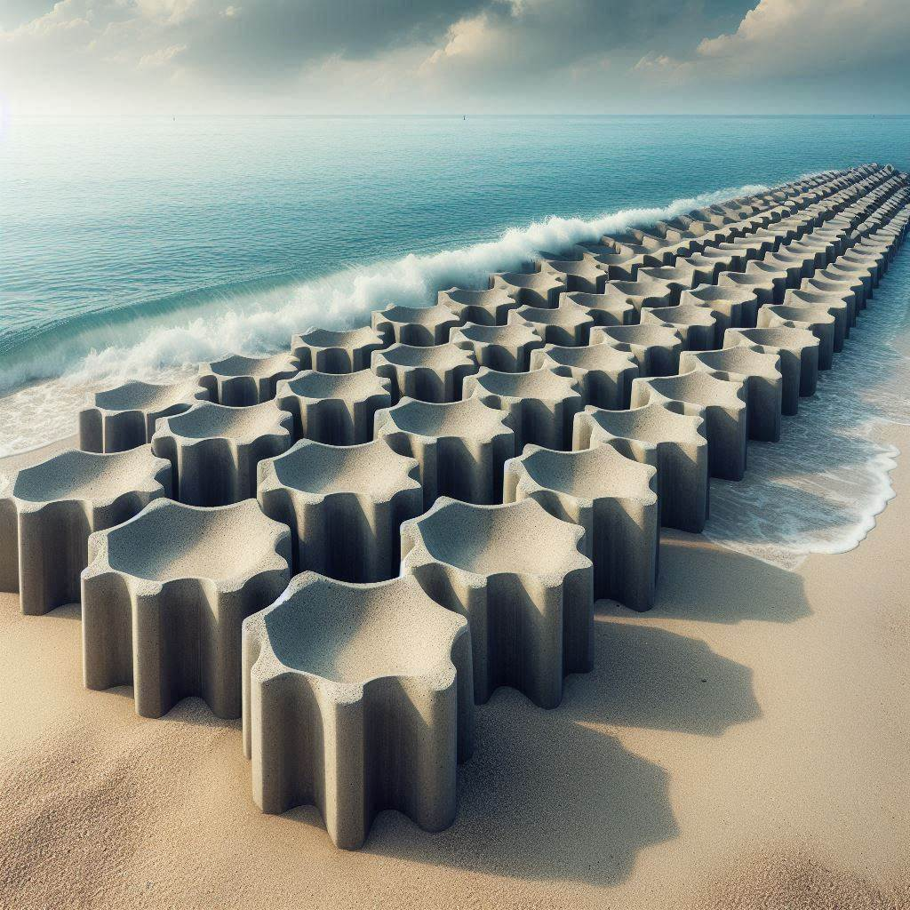

|
 | |
|
| 港口緣起 | 消波塊 | 施作方式 | 研習心得 |
， 是在海岸或堤岸放置的大型水泥塊，用來吸收海浪或大水拍打的衝擊以保護海岸或河堤，
常見的外形有點類似正四面體，是由中心點有水泥塊往四個方向伸展，分別對應正四面體的頂點。
消波塊在臺灣網路社群又被稱為中部粽（具體原因請詳見#流行文化章節）。
消波塊最早是1950年由法國人發展出來[2]，當專利保護期結束後，便大量普及到全世界。
二次大戰中的北非戰線上，法軍用防護塊阻擋德軍坦克前進。戰後清理戰場，將此種塊體拋在卡薩布蘭卡防波堤周圍，
以替代護堤方塊[來源請求]。本為廢物利用，不料其消波效果甚佳。隨即由Sogreach水工試驗所研究證明其確有消波作用，
安定性良好，於是取得世界性專利。此為異形消波塊的鼻祖，此後各種形式的消波塊相繼推出，各自詡其性能。